Learning outcomes
By the end of Chapter 15 you should be able to do each of these. The tag shows where it is covered.
- 15.1Describe the role of greenhouse gases in climate change and the sources of those gases.
- 15.1Explain Earth's energy budget and how positive and negative feedback mechanisms can influence climate.
- 15.2Describe which parts of the environment are changing because of anthropogenic climate change.
- 15.3Explain how we know about climates in the geologic past.
- 15.4Describe the causes of recent climate change, particularly the role of humans in the overall climate balance.
How to use this guide
Underlined words are key terms. Click one, or open Key terms at the bottom right, to read and search every definition from this chapter. The chapter moves from how the atmosphere sets Earth's temperature (15.1), to the evidence that climate is changing now (15.2), to how geologists read past climates from rocks, ice, and fossils (15.3), and finally to why the present change is caused by people (15.4).
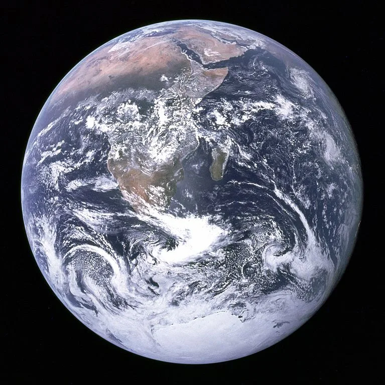
Earth's systems
A is a group of interacting objects and processes. studies five of them:
- : rocks
- : gases
- : water
- : ice
- : living things
A change in one system affects the others, whether it comes from natural cycles or from (human-driven) forces.
Knowing how these systems interact lets us understand how and why human activity causes today's climate change, and lets us tell natural processes from human ones in the geologic record. Earth's temperature and climate depend mostly on the gases in the atmosphere, on ocean circulation, and on the land surface: its rocks, glaciers, and plants.
| Weather | Climate | |
|---|---|---|
| What | Short-term temperature and precipitation | The range of temperature and precipitation averaged over the long term for a region |
| Time span | Days and weeks | Usually a 30-year average as the baseline |
| Example | The cold US winters of 2013 and 2014 | The same winters were record-warm for the rest of the Earth |
So one cold winter does not mean the globe is cooling. means slow, long-term changes and trends in temperature and precipitation, for one area or for the whole Earth.
15.1Earth's temperature
Without an atmosphere, Earth would swing between extreme day and night temperatures, like the Moon. The Moon has almost no atmosphere: its days reach about 106 °C (224 °F) and its nights about −183 °C (−298 °F), a range of about 290 °C (522 °F). Earth's atmosphere regulates its temperature.
15.1.1 Composition of the atmosphere
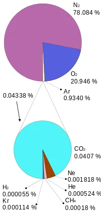
What air is made of
- 78% nitrogen (N2)
- 21% oxygen (O2)
- ~1% argon (Ar)
- < 1% : CO2, water vapor, neon, helium, methane, and others
- Water vapor varies a lot by region; it averages about 1%.
The trace gases include the important , which warm and cool the planet.
On a geologic time scale, volcanoes add CO2 to the atmosphere, and weathering removes it by burying it in sediments. Biological processes both add and remove CO2.
Greenhouse gases absorb part of the long-wave infrared radiation that Earth gives off, so that heat is not lost to space. More greenhouse gas means more heat absorbed and a warmer planet. These gases have little effect on the shorter-wave radiation coming in from the Sun.

Why CO2 matters most
- Water vapor is the most abundant greenhouse gas, but its amount changes little over time.
- CO2 is much less abundant, but people keep adding it by burning , changing land use, and cutting forests. Volcanoes add CO2 too, at an insignificant rate by comparison.
- CO2 stays in the air for hundreds of years.
- Most of the added CO2 is "fossil" carbon.
Coal and oil formed from long-dead plants. Those plants made their tissues by millions of years ago, and their carbon was stored slowly in rocks and sediments. Burning coal and oil releases that stored solar energy and fossil CO2 almost instantly, though it took millions of years to collect. This rate of release is the key to today's climate change.
15.1.2 Carbon cycle
Earth balances its carbon through two linked , and human activity is now rapidly throwing that balance off.
| Biological carbon cycle | Geological carbon cycle | |
|---|---|---|
| How it works | Living things, mostly plants, take CO2 from the air by photosynthesis; when they die and decay, the carbon returns to the air. | Part of the biological carbon is buried: plants become coal and petroleum, organic fragments become organic-rich shale, and shells become limestone. |
| Speed | Fast: years to decades | Very slow: geologic time |
| Carbon involved | A small share | Most of Earth's carbon |
Photosynthesis: CO2 + H2O + sunlight → sugars + O2
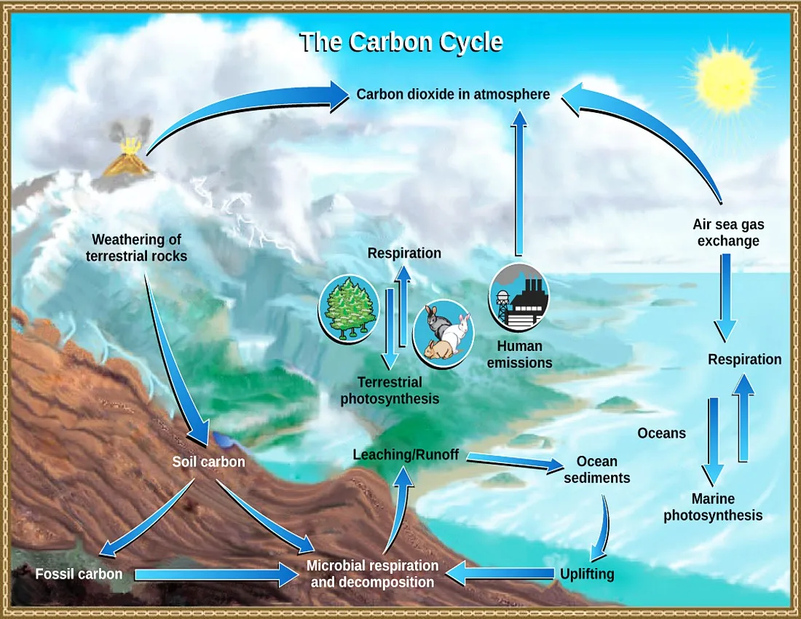
The geological cycle stores carbon in several , each for a very different length of time (Figure 15.5):
- Peat, coal, and : plant organic matter, for thousands to millions of years.
- The ocean: weathering of silicate minerals turns atmospheric CO2 into dissolved , stored for thousands to tens of thousands of years.
- Carbonate rocks: marine organisms turn bicarbonate into calcite, stored for tens to hundreds of millions of years.
- Sediments: carbon compounds stored directly for tens to hundreds of millions of years; some become petroleum.
- The mantle: carbon-bearing sediments carried down by , for tens of millions to billions of years.
- The atmosphere: CO2 from Earth's interior released by volcanic eruptions, for years to decades.
For most of Earth's history, volcanoes released carbon at about the same rate the other processes stored it, and climate stayed fairly stable. The balance has been upset several times:
| Imbalance | What happened | Effect |
|---|---|---|
| Extra volcanism | The eruptions, about 250 million years ago | Strong warming over a few million years |
| Mountain building | The Himalaya, forming for about 40 million years, exposes huge areas of rock to weathering, especially the of feldspar | CO2 drawn from the air into the ocean and carbonate sediments; the steady CO2 drop helped bring on the Pliocene–Pleistocene glaciations |
| Human activity (not geological) | In a few decades, people have burned coal, oil, and gas that took several hundred million years to store | Climate changing faster than ever before |
15.1.3 Greenhouse effect
The happens because greenhouse gases are in the atmosphere, and it is why global temperature is rising. It is named after the way sunlight warms a greenhouse or a closed car: light passes through the glass, turns into heat inside, and the glass traps the heat. For Earth it works in three steps (Figure 15.6):
- Sunlight comes in. is mostly ultraviolet (UV), visible light, and infrared (IR). The atmosphere absorbs, scatters, or reflects some of it, but about half reaches the surface.
- The surface warms. The radiation that reaches the ground turns into heat, as sunlight warms pavement or a deck. The warm surface then gives off radiation, the heat you feel from a fire or a hot stove.
- Greenhouse gases trap the heat. Energy leaves Earth at a different, longer wavelength than it came in. Greenhouse gases (CO2, water vapor, methane, and nitrous oxide) absorb this outgoing thermal IR, so the energy is caught on its way out, not on its way in. More greenhouse gas traps more thermal IR.

Explore: Interactive animation of the greenhouse effect (National Academy of Sciences) ↗
15.1.4 Earth's energy budget
The flow of incoming solar energy and outgoing heat is Earth's . For temperature to stay stable over long times, energy in must equal energy out on average at the top of the atmosphere. Sunlight reaching Earth is fairly steady over time.

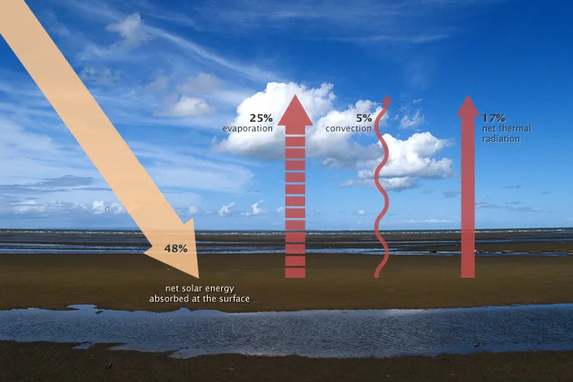
| Share | Fate |
|---|---|
| ~29% | Reflected back to space by clouds, particles in the air, and bright surfaces such as sea ice and snow |
| ~23% | Absorbed in the atmosphere by water vapor, dust, and ozone |
| ~48% | Passes through and is absorbed at the surface |
| ~71% | Total absorbed by the Earth system (23% + 48%) |
Absorbed energy warms the air and surface. If Earth only absorbed energy, it would keep heating, like a sink with the tap running and the drain plugged. But a warmer Earth gives off more heat to space, and that is the main thing that stops it from heating without limit. Greenhouse gases act like a canopy: the more there are, the more outgoing heat stays, and the less escapes.
Other factors in the budget
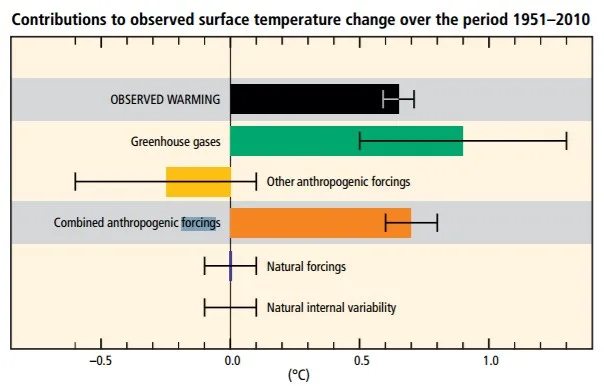
What else changes the budget
- The Sun: more solar energy would warm Earth, but changes are very small.
- : less ice and snow means land and water absorb more sunlight.
- : dust and particles from burning coal, diesel engines, and eruptions reflect sunlight and cool the planet.
- Net effect of people: warming, because the greenhouse gases from burning fossil fuels outweigh the aerosols.
Feedback mechanisms
A change to the planet can trigger feedbacks that make the change bigger or smaller (Figure 15.11).
- A makes the original change stronger. Sea ice: losing Arctic sea ice lowers albedo, so the air and ocean absorb more energy. Permafrost: as the climate warms, permafrost (permanently frozen soil at high latitudes, mostly in the Northern Hemisphere) thaws; its thick organic matter meets oxygen and decays, releasing CO2 and methane, which cause more warming, which thaws more permafrost.
- A makes the original change weaker. Short term: more CO2 should help forest canopies grow, and they take up more CO2. Long term: more CO2 means more and more , which carries bicarbonate and other ions to the ocean to be stored in sediment.
The budget is out of balance
Global warming is evidence that Earth's energy budget is not balanced: the effects that raise Earth's temperature are now greater than those that lower it.
Check yourself: Section 15.1 quiz in the textbook ↗
15.2Evidence of recent climate change
Climate has often changed for natural reasons (Unit 14.5.1 and 15.3), but the scientific consensus is that human activity is causing today's very rapid climate change, an idea first suggested more than 75 years ago. This section covers the evidence for .
Watch: Evidence for climate change, six minutes (North Carolina State University) ↗
15.2.1 Global temperature rise

Since 1880, Earth's average surface temperature has trended upward, with most of the warming since 1970. Surface temperature includes both land and ocean, because water absorbs much of the extra trapped heat.
- A is the difference between a measured temperature and the average for a . The graph uses 1951–1980; another common choice is the century 1900–2000. Reference periods are 30 years or more.
- A positive anomaly means warmer than the reference average. The chapter gives +1.25 °C for 2015 and −0.28 °C for 1950 against 1900–2000. A difference of 1.25 °C is a difference of 2.25 °F (see Fact-check notes).
The ocean takes most of the heat
- Oceans cover about 70% of Earth and have a very high .
- They have absorbed about 80–90% of the extra heat from human activities.
- The top 700 m (2,300 ft) has warmed by about 0.17 °C (0.3 °F) since 1969.
- Water warms only a little while absorbing a lot of heat; air, with its lower specific heat, warms more while absorbing less.
The 1998–2013 "pause"
- Some claimed greenhouse gases don't cause warming because surface temperatures barely rose from 1998 to 2013.
- But decade-scale ocean circulation changes, similar to La Niña, pushed warm water deeper.
- Adding that ocean heat back in shows the warming clearly.
- The storage was temporary: 2014–2016 broke records, and 15 of the first 16 years of the 21st century were the hottest on record.
Watch: Global temperature anomalies since 1880 (NASA animation) ↗ · The ocean's heat capacity, 3 minutes (NASA JPL) ↗
15.2.2 Carbon dioxide
Anthropogenic greenhouse gases, mostly CO2, have risen since the Industrial Revolution, when burning fossil fuels increased dramatically. Today's levels are unprecedented in the last 800,000 years recorded in ice cores.
- CO2 rose by about 40% from 1750 to 2011, and the rate of increase has been fastest in the most recent decade.
- From 1750 to 2011, about 2,040 gigatonnes of CO2 were emitted: about 40% stayed in the atmosphere, and about 60% went into plants and soil on land or into the ocean.
- In the lifetime of most young adults, atmospheric CO2 has risen by about 50 ppm, or 15%.
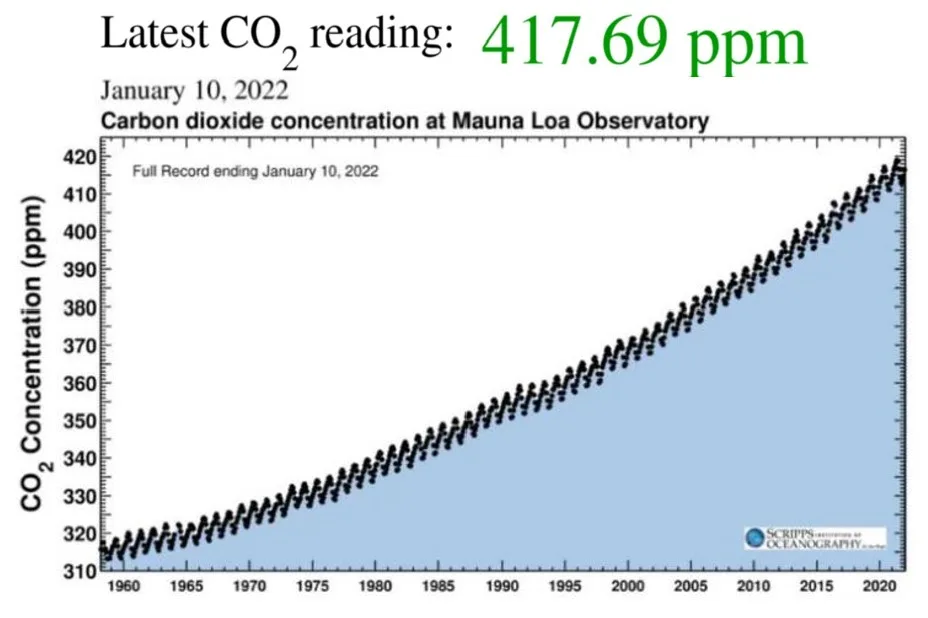
The
- Charles Keeling, an oceanographer at Scripps Institution of Oceanography, was the first to measure atmospheric CO2 regularly.
- Mauna Loa Observatory has measured CO2 continuously with his methods since 1958.
- Zigzag: a yearly cycle, as Northern Hemisphere plants take up CO2 in summer and are dormant in winter.
- Trend: a steady rise that is getting steeper; the rate of increase is itself increasing.
Measurements from many stations show that CO2 varies with latitude: most human CO2 sources are in the Northern Hemisphere, where most of the land and most developed nations are. See the latest reading at the Keeling Curve site.
Watch: Atmospheric CO2, recently and over 800,000 years (NOAA) ↗
15.2.3 Melting glaciers and shrinking sea ice
Glaciers are year-round ice on land; icebergs are floating ice that may have broken off glaciers (Unit 14). Alpine glaciers, ice sheets, and sea ice are all melting.

Ice loss by the numbers
- Antarctica: losing about 118 gigatonnes of ice per year.
- Greenland: losing about 281 gigatonnes per year.
- 1 tonne = 1,000 kg; 1 gigatonne = 1 billion tonnes, over 2 trillion pounds.
- Almost all major alpine glaciers are shrinking, thinning, and retreating, at a rate never seen since good glacier records began in the 1940s.
Before human warming, some glaciers advanced while others retreated. Now spring snow cover is decreasing and sea ice is shrinking. Most sea ice is around the North Pole, which has only the Arctic Ocean and its ice. The share of the oldest Arctic ice (more than four years old) fell from 20% in 1985 to 3% in 2015.
Explore: NASA Global Ice Viewer ↗ · Watch: 25 years of Arctic sea ice disappear (NOAA) ↗
15.2.4 Rising sea level
Sea level is rising about 3.4 mm (0.13 in) per year, and it rose 0.19 m (7.4 in) from 1901 to 2010. The two main causes are melting glaciers and the of seawater: as solids, liquids, and gases warm, they expand.
Watch: Ball-and-ring thermal expansion demonstration, 30 seconds (NCSSM) ↗
15.2.5 Ocean acidification
Of the CO2 people have added since 1750, about 40% stayed in the atmosphere and the rest went into the ocean and vegetation; the ocean alone has absorbed about 30% of it. This causes :
From CO2 to thinner shells
- CO2 dissolves in seawater and forms carbonic acid: CO2 + H2O → H2CO3.
- The ocean becomes more acidic: its goes down.
- Acid attacks calcium carbonate, just as hydrochloric acid makes calcite (limestone) fizz.
- Organisms that build calcium carbonate shells struggle: thinner shells in some sea snails () and in , and slower growth of coral reefs.
These tiny organisms are at the base of the marine food web. Acidification combined with warmer water and less oxygen is expected to have severe effects on marine ecosystems and on fisheries that people depend on for food.
15.2.6 Extreme weather events
Extreme weather, such as hurricanes, heavy precipitation, and heat waves, is increasing and becoming more intense. Warmer air holds more moisture, which raises the potential for extreme events.
- Hurricanes form over warm ocean water. Since the 1980s they have become more intense and longer-lasting; the chapter also says more frequent, which is less certain (see Fact-check notes).
- Precipitation in the contiguous United States has risen about 10% since 1910, much of it in heavy downpours. It is uneven: the north is projected to get wetter and the already dry Southwest drier.
- Heat waves have increased, and rising temperatures are already affecting crop yields in northern latitudes.
Check yourself: Section 15.2 quiz in the textbook ↗
15.3Prehistoric climate change
Earth's climate has changed a great deal. In the Mesozoic Era, the age of dinosaurs, the climate was much warmer and CO2 was abundant. Through the Cenozoic Era, the last 66 million years, the climate has gradually cooled.
15.3.1 Past glaciations
Over geologic history, climate changed slowly over millions of years. Before the current Pliocene–Quaternary glaciation there were several other major ones:
- (end of the Archean to early Proterozoic). Most often linked to the : the new oxygen likely reacted with the potent greenhouse gas methane, cooling the planet.
- Late Proterozoic glaciations, part of the hypothesis. Evidence of glaciers even at low latitudes.
- Andean-Saharan glaciation (Late Ordovician), at the same time as a major extinction.
- Karoo Ice Age (Pennsylvanian). Wegener cited it as evidence that Pangaea drifted over the South Pole. Linked to more oxygen and less CO2 as land plants evolved and spread.
- Cenozoic cooling: glaciers on Antarctica from about 35 million years ago, Northern Hemisphere ice sheets later, and the Pleistocene ice ages.
Earlier major glaciationsCurrent (Cenozoic) icehouse
Snowball Earth
Rocks from about 700 million years ago around the world hold signs of glaciers even near the equator. In many regions, limestone (usually tropical and marine) and glacial deposits (usually cold) are found together. One example is Antelope Island in the Great Salt Lake, Utah, where limestone is interbedded with glacial .
Snowball Earth (controversial)
- A runaway albedo effect: ice and snow reflect sunlight and spread from the poles toward the equator.
- Land and ocean freeze over completely and biological activity collapses.
- CO2 cannot enter the frozen ocean, so the ice melts only when volcanoes build CO2 high enough; some studies estimate about 350 times today's level.
Why it is debated
- Life survived, so complete freezing is questioned.
- The rival hypothesis keeps some equatorial ocean open.
- Scientists also disagree on the stability of Earth's magnetic poles, on how later metamorphism changed the rocks, and on how to read the evidence.
Cenozoic cooling
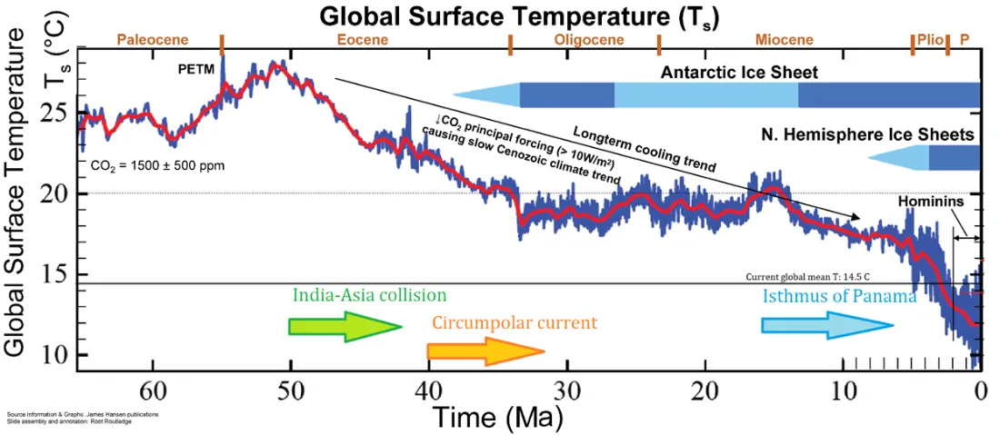
The Cenozoic began warm. The Early Eocene, about 50 to 55 million years ago, was the warmest time, with a brief spike called the (PETM); Antarctica and Greenland had no ice. Since the Eocene, tectonic events have cooled the planet steadily:
| When | Event | How it cooled Earth |
|---|---|---|
| From ~50 Ma | India collides with Asia, raising the Himalaya | More weathering of silicate minerals, especially feldspar, consumes CO2 and weakens the greenhouse effect |
| ~40 Ma | South America and Antarctica separate, opening the Drake Passage | The flows freely west to east and cuts the Southern Ocean off from warmer oceans; by about 35 Ma (Oligocene) glaciers form on Antarctica |
| ~15 Ma (chapter) | Volcanoes build the Isthmus of Panama, joining the Americas | Blocks flow between the Pacific and Atlantic and reduces heat transport toward the poles; Antarctic ice grows (see Fact-check notes for dating) |
| ~5 Ma (chapter) | Ice sheets start to grow in North America and northern Europe (Pliocene) | More reflective ice causes more cooling: the ice–albedo positive feedback |

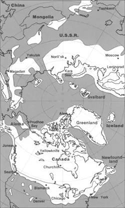
The Pleistocene ice ages
- The most intense part of the current glaciation is the last 1 million years of the Pleistocene.
- Temperature swung through a range of almost 10 °C (18 °F) over 40,000 to 100,000 years, and ice sheets grew and shrank with it.
- The swings are paced by small changes in Earth's orbit, the (Unit 14). Over the past million years, glacial cycles came about every 100,000 years.
- Warm periods within an ice age are ; there have been five or six in the last 500,000 years, the latest being our own Epoch. Brief, milder warm spells within a glacial period are .

| Event | When | What is known |
|---|---|---|
| About 12,000 years ago | A cooling widely recognized in the Northern Hemisphere, but its timing differs from place to place and it is hard to find in the Southern Hemisphere | |
| Around 6,000 years ago | A warming that was not warmer everywhere, not as warm as today, and not warm at the same time everywhere |
15.3.2 Proxy indicators of past climates
No one measured temperature millions of years ago, so geologists use : biological, chemical, or physical signatures preserved in rock, sediment, or ice that act like a fingerprint of past conditions. They are indirect indicators of climate.
| Proxy | Found in | What it records | Time span |
|---|---|---|---|
| Glacial sediments (diamictite, ) | Rock, e.g. the Mineral Fork Formation, Utah | Past glaciations | Proterozoic and Paleozoic |
| Oxygen isotopes | Foraminifera shells in deep-sea cores; ice cores | Deep-sea temperature and ice volume | Cenozoic (cores); 800,000 years (ice) |
| Boron isotopes | Planktonic foraminifera shells | Ocean pH, hence past CO2 | About 60 million years |
| Air bubbles | Antarctic and Greenland ice cores | Composition of past air, including CO2 | 800,000 years |
| Microfossil assemblages | Sediment cores | Cool- versus warm-water conditions | Cenozoic |
| Tree rings | Living and dead trees | Wet and dry, warm and cold years | Thousands of years |
| Pollen assemblages | Lake-sediment cores | Past vegetation, hence climate | Example: 125,000 years |
Others include human historical accounts, instrument records from the recent past, lake sediments, cave deposits, and corals.
Sediment cores: stable oxygen isotopes
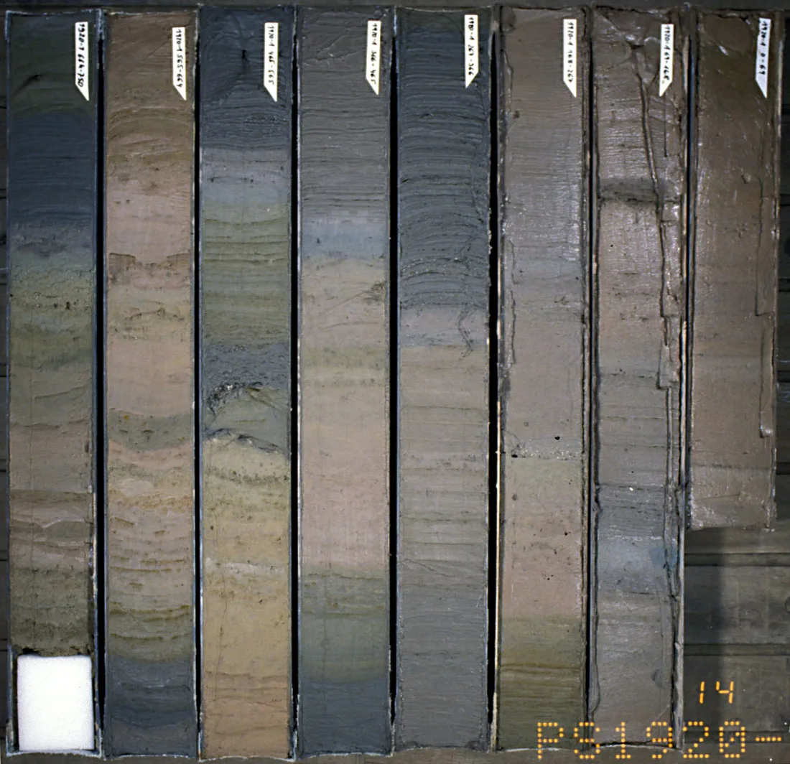
Deep-sea cores
- The international Ocean Drilling Program drills cores of sediment that piled up continuously on the sea floor.
- They hold shells of bottom-dwelling (benthic) foraminifera from the last 66 million years.
- The shells' stable carbon and oxygen isotopes record deep-sea temperature and continental ice volume.
Oxygen has two main stable : common, light 16O and rarer, heavy 18O. Both are in water and in the calcium carbonate of foraminifera shells. The ratio of 18O to 16O, written , tracks ice volume (Figure 15.20):
- Water with light 16O evaporates more easily, more so from warm water, which leaves surface seawater slightly richer in 18O.
- As vapor drifts toward the poles, water with heavy 18O condenses and rains out first, so the remaining vapor is depleted in 18O.
- In cold times, this 16O-rich precipitation is locked up as glacial ice on land. The ice sheets were more than a mile thick over much of North America as recently as about 14,000 years ago.
- The ocean, and the foraminifera shells that grow in it, are left enriched in 18O. Higher δ18O in shells means more ice and a colder climate.
Continuous cores record these fossils layer by layer, so they give a record of glacials, interglacials, and interstadials (Figure 15.21).

Sediment cores: boron isotopes and acidity
Boron has two isotopes, 11B and 10B, and their relative abundance in dissolved boron depends on pH. Because more CO2 means more carbonic acid and lower pH, the boron isotopes in planktonic foraminifera shells reveal past atmospheric CO2 over about 60 million years:
- ~60 Ma (early Cenozoic): CO2 above 2,000 ppm, with a lower ocean pH.
- ~55–40 Ma: CO2 began to fall, possibly because less CO2 came out of ocean ridges, volcanoes, and metamorphic belts, and more carbon was buried by subduction and by weathering of the rising Himalaya.
- ~24 Ma (Miocene): CO2 below 500 ppm.
- Last 800,000 years: CO2 never above about 300 ppm (until the industrial era).
Carbon dioxide in ice cores
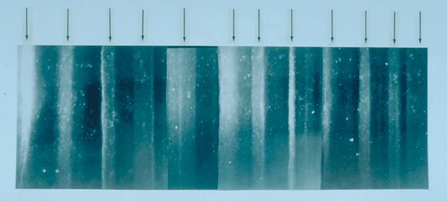

Ice cores drilled from the Antarctic and Greenland ice sheets give a more detailed and direct chemical record of the last 800,000 years:
- Snow piles up in yearly layers. Their δ18O gives temperature, as above.
- As snow turns to ice, it traps small bubbles of air. Small pieces of ice are crushed, and the ancient air goes into a that measures its chemistry, including CO2.
- Over the last 800,000 years, CO2 reached about 300 ppm in warm times and fell to about 170–185 ppm in cold times. Today it is over 420 ppm (Figure 15.28).
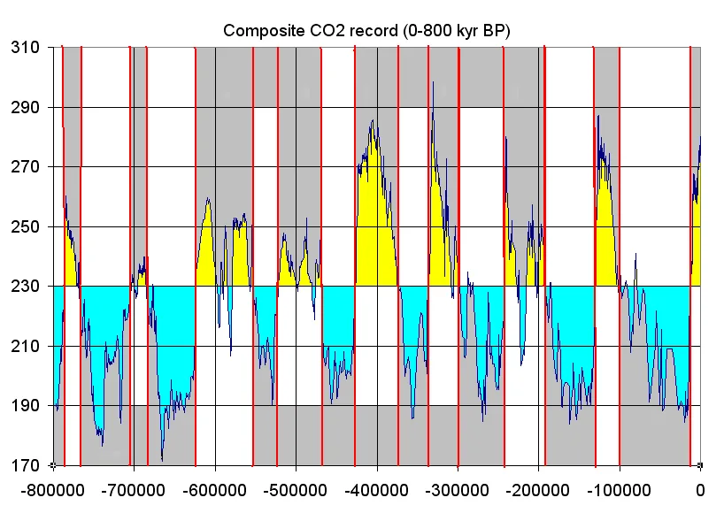
Oceanic microfossils
Microfossils such as foraminifera, diatoms, and radiolarians are also proxies. Groups of species found together are called . One layer of a sediment core may hold a cool-water assemblage (from a glacial time), and another layer a warm-water assemblage.
Watch: Climatic evidence from sediments (video) ↗
Tree rings

Reading tree rings
- Each year a tree grows one ring, with a light and a dark part.
- Wide rings: wetter years. Narrow, close rings: drier, colder years.
- Some trees live several thousand years, so their rings reconstruct regional temperature, precipitation, vegetation, streamflow, and more: study.
- Dead wood, such as beams in Puebloan ruins, extends the record and shows long droughts that may explain why villages were abandoned.

Pollen
Pollen as a proxy
- Each flowering plant's pollen grains look distinctive under a microscope.
- Pollen is preserved in lake sediments that build up in yearly layers.
- Fossil-pollen assemblages (for example spruce, pine, oak), dated by radiometric methods, show which plants grew there, and plants prefer different climates.
- East of the Cascades in the Pacific Northwest, pollen tracked over 125,000 years and two glaciations shows vegetation changing between glacial and interglacial times (Whitlock and Bartlein 1997).
Check yourself: Section 15.3 quiz in the textbook ↗
15.4Anthropogenic causes of climate change
Prehistoric climate changes happened slowly, over many millions of years. Today's changes are rapid and largely caused by people. Scientists reached this conclusion step by step:
- Scientists suspect that human-made greenhouse gases would change climate, since changes in these gases did so every time in the geologic past.
- Systematic measurements confirm that human CO2 is building up in the atmosphere, forests, and oceans.
- Thousands of ground studies and continuous land and ocean satellite measurements show the expected warming: the is established.
The theory states that humans are causing most of the current climate change by burning fossil fuels such as coal, oil, and natural gas. Like every theory, it can grow as new data and methods appear; it represents the field's current state of knowledge.
15.4.1 Scientific consensus
Consensus
- The overwhelming majority of climate studies show that human activity is changing the climate rapidly, which will cause severe environmental damage.
- Peer-reviewed studies show 97% of climate scientists agree that the warming is caused by human activities.
- No other explanation accounts for the link between human greenhouse-gas emissions and the changing climate.
- Leading scientific organizations agree, including the US National Academy of Sciences, set up by Congress in 1863 to give independent, objective advice on science.
The isotopic fingerprint
- Fossil fuels come from plants that lived millions of years ago, and they have a different 13C/12C ratio from today's air. (These are stable isotopes; radioactive 14C is not used here.)
- Antarctic ice shows a steady carbon-isotope signature from about 1000 to 1800 AD, a gradual change after 1800, and a faster change after 1950.
- As fossil CO2 mixes in, the air's signature looks more and more like fossil fuel. This has been used since the 1980s.
15.4.2 Anthropogenic sources of greenhouse gases
Human emissions of greenhouse gases have grown since pre-industrial times with economic and population growth. CO2 is at levels not seen in at least 800,000 years (Figure 15.28):

| Sector | Share |
|---|---|
| Electricity and heat production | 25% |
| Agriculture, forestry, and other land use (AFOLU) | 24% |
| Industry | 21% |
| Transportation, including cars | 14% |
| Other energy production | 9.6% |
| Buildings | 6.4% |
- Fossil-fuel burning and industrial processes caused about 78% of the increase in greenhouse-gas emissions from 1970 to 2010.
- About half of all human CO2 emissions since 1750 happened in the last 40 years, and about 40% of the emissions have stayed in the atmosphere.
- Emission measured as lets different gases be added together.
- Policies and agreements have cut emissions in some places, but economic growth in the developing world has raised the global total; 2000–2010 saw the largest increases since 1970.

Despite the scientific consensus, slowing climate change requires political action.
Live data: Daily CO2 ↗ · Check yourself: Section 15.4 quiz in the textbook ↗
Summary
For Earth's climate to be stable, incoming sunlight and outgoing heat must balance. Greenhouse gases absorb the thermal infrared that the sun-warmed surface gives off, trapping heat: the greenhouse effect. People are adding greenhouse gases, above all CO2 from fossil fuels, so the energy budget is out of balance and Earth is warming. Positive feedbacks such as melting sea ice and thawing permafrost amplify the change. Carbon moves through a fast biological cycle and a slow geological cycle. The evidence of change includes rising air and ocean temperatures, the Keeling Curve, shrinking ice, rising seas, ocean acidification, and more extreme weather. Proxies in rocks, sediment cores, ice cores, tree rings, and pollen show that climate has changed many times, from Snowball Earth to the Pleistocene ice ages, but always slowly. Today's rate and amount of change are unique in the geologic record and can only be explained by human activity.
Quick recap
- Weather = days to weeks; climate = long-term average (often 30 years).
- Air: 78% N2, 21% O2, ~1% Ar; greenhouse gases are trace gases (H2O, CO2, CH4, N2O).
- Greenhouse effect: short waves in → surface warms → long-wave thermal IR out, absorbed by greenhouse gases.
- Energy budget: 29% reflected, 23% absorbed by air, 48% absorbed by surface (71% absorbed in total).
- Positive feedback amplifies (ice–albedo, permafrost); negative feedback dampens (plant growth, weathering).
- Carbon cycles: biological (fast) and geological (slow, most of the carbon). Upsets: Siberian Traps, Himalaya, humans.
- Evidence: warming since 1880 (mostly since 1970); ocean took 80–90% of the heat; CO2 +40% since 1750.
- Ice loss: Antarctica ~118 Gt/yr, Greenland ~281 Gt/yr. Sea level +3.4 mm/yr; +0.19 m from 1901 to 2010.
- Acidification: ocean absorbed ~30% of human CO2 → carbonic acid → lower pH → thinner shells.
- Past glaciations: Huronian (~2.5 Ga), Snowball Earth (~700 Ma), Andean-Saharan, Karoo, Cenozoic (Antarctica ~35 Ma).
- Proxies: δ18O (higher = more ice), boron isotopes (pH → CO2), ice-core bubbles, microfossils, tree rings, pollen.
- CO2: 170–300 ppm for 800,000 years; 278 pre-industrial; 315 in 1958; over 420 today. Isotopes fingerprint it as fossil carbon.
Check yourself: Chapter 15 review quiz in the textbook ↗
Resources
Fact-check notes
Each fact in this guide comes from Chapter 15. These notes flag places where the chapter simplifies, has a slip, or differs from other reliable sources. Where the chapter is wrong, the guide's main text uses the corrected statement and the chapter's wording is recorded here.
| Chapter says | Check |
|---|---|
| The Moon's day–night range is "272°C (522°F)" (106 °C to −183 °C). | Arithmetic slip in °C: 106 − (−183) = 289 °C, which matches 522 °F. The guide says about 290 °C. (NASA's Diviner measurements give equatorial noon near 120 °C; the chapter's values are within the reported range.) |
| Volcanoes "and the weathering process, which bury CO2 in sediments, are the atmosphere's CO2 sources." | Weathering is a sink, not a source: it removes CO2 from the air (the chapter itself says so in 15.1.2). The guide says volcanoes add CO2 and weathering removes it. |
| Thermal IR "instead of UV, visible, or regular IR" is what gets trapped. | Simplified. Greenhouse gases absorb at particular long-wave (thermal) infrared wavelengths; some near-IR from the Sun is also absorbed by water vapor (the gaps in the spectrum figure). The guide keeps the main idea: energy is caught on the way out at longer wavelengths. |
| "The effect of anthropogenic aerosols on the climate's system is weak." | The IPCC finds human aerosols have a significant cooling effect that masks part of the greenhouse warming (the "other anthropogenic forcings" bar in the forcings figure, about −0.25 °C). The net human effect is still clearly warming, as the chapter says. The guide says aerosols cool "somewhat". |
| "An anomaly of 1.25 ℃ (34.3°F)"; "-0.28 ℃ (31.5°F)". | Conversion slip: a temperature difference converts by ×1.8 only, so 1.25 °C = 2.25 °F and −0.28 °C ≈ −0.5 °F (the chapter converted them as temperatures). The anomaly values also depend on which reference period is used; the chapter mixes 1951–1980 (graph) and 1900–2000 (text). |
| The ocean's top 701.4 m "has increased by -17.6°C (0.3℉) since 1969". | Conversion slip: a rise of 0.3 °F is about +0.17 °C (−17.6 °C is what 0.3 °F converts to as a temperature). 701.4 m is a back-conversion of 2,300 ft; the source says about 700 m. The guide gives 0.17 °C (0.3 °F) and 700 m. |
| "20409 tonnes (2040 gigatons) of CO2" since 1750. | Unit slip: 2,040 gigatonnes is 2,040 billion tonnes. The IPCC AR5 value is 2,040 ± 310 Gt CO2 for 1750–2011, and the 40% rise in CO2 is also to 2011. The guide gives the dates. |
| "NASA regularly publishes these measurements at scripps.ucsd.edu"; Mauna Loa has measured CO2 "since 1957". | The Keeling Curve site is run by Scripps Institution of Oceanography (NOAA runs a parallel Mauna Loa record). Keeling's continuous Mauna Loa record begins in March 1958, as the chapter's own summary says; the guide uses 1958. |
| The Keeling Curve "increases exponentially". | The growth rate has risen decade by decade, so the curve gets steeper (NOAA: about 0.8 ppm per year in the 1960s, about 2.4 ppm per year in the 2010s). Calling it exactly exponential is loose; the guide says the rise is getting steeper. |
| Antarctica melts at "1189 tonnes (118 gigatons)" and Greenland "2819 tonnes (281 gigatons)" per year. | Unit slip: the values are 118 and 281 gigatonnes per year (NASA GRACE data at the time). The guide uses gigatonnes. |
| The old-ice share fell "from 20 percent in 1985 to 3 percent in 2015". | Correct for the oldest Arctic sea ice, older than four years (NOAA Arctic Report Card 2015). The guide names the age class. |
| Hurricanes "have increased in frequency, intensity, and duration" since the 1980s. | The IPCC (AR6, 2021) finds the share of major (Category 3–5) tropical cyclones has likely increased over the last four decades, but has low confidence in long-term trends in their overall number. The guide flags frequency as less certain. |
| Summary: carbonic acid "is raising the pH of the oceans". | Reversed: more carbonic acid lowers pH (the ocean becomes more acidic), as 15.2.5 says. The guide says pH goes down. |
| The Cenozoic Era is the last "65 million years". | The current date for the start of the Cenozoic is 66.0 million years ago (International Chronostratigraphic Chart). The guide uses 66. |
| "This warm time is called the Paleocene-Eocene Thermal Maximum." | The PETM was a brief spike of a few hundred thousand years about 56 million years ago. The longer warm interval after it, about 53–49 million years ago, is the Early Eocene Climatic Optimum. The guide describes the Early Eocene as the warmest time with the PETM as a spike within it. |
| "Around 15 million years ago" volcanoes "created the Isthmus of Panama", which reduced heat transfer to the poles and cooled Antarctica. | Disputed. Most studies date the full closure to about 2.8 million years ago (O'Dea et al. 2016, Science Advances), though some argue for an earlier, partial connection around 15–13 Ma. The usual view is that closure strengthened the Gulf Stream and helped Northern Hemisphere ice sheets grow. The guide keeps the chapter's date in the table but flags it. |
| "By 5 million years ago" ice sheets had started to grow in North America and northern Europe. | Large Northern Hemisphere ice sheets are usually dated to about 2.7 million years ago (the intensification of Northern Hemisphere glaciation); smaller earlier ice is debated. The guide keeps the chapter's date with "(chapter)". |
| "During interglacials, very brief periods of even warmer climate are called interstadials." | Slip: an interstadial is a brief, milder spell within a glacial period, not a warmer spell within an interglacial. The guide uses the standard meaning. |
| Pleistocene temperature varies through "a range of almost 10°C". | That range fits polar temperatures such as Antarctica's (the ice-core curves). Global average temperature changed less between glacial and interglacial times, about 4–7 °C (IPCC). The guide keeps the chapter's figure. |
| Boron isotopes: CO2 over 2,000 ppm "higher pH" around 60 Ma, then "a noticeable drop in pH" as CO2 fell. | Reversed: high CO2 means lower pH, and pH rose as CO2 fell (Pearson and Palmer 2000, Nature). The guide gives the correct direction. |
| Ice-core CO2 minimum "about 170 ppm" (15.3.2) but "about 185 ppm" (15.4.2). | Both appear in the data: the lowest single value in the EPICA Dome C record is about 172 ppm (about 667,000 years ago); typical glacial lows are about 180–190 ppm. The guide gives 170–185 ppm. |
| "Currently, the earth's atmospheric carbon dioxide content is over 410 ppm" / "over 417 ppm in 2022". | Out of date: NOAA's Mauna Loa annual mean was about 424.6 ppm in 2024. The guide says over 420 ppm and shows the 2024 value. |
| Pine pollen is higher during glaciations and lower during interglacials (Whitlock and Bartlein 1997). | Simplified. At Carp Lake the full-glacial period was cold steppe dominated by sagebrush (Artemisia) and grasses; pine-dominated forest or woodland appears in both interglacial and cooler interstadial zones. The guide says only that vegetation changed between glacial and interglacial times. |
| Fossil fuels and industry "contributed 78 percent of all emissions since 1970." | The IPCC AR5 wording is that they contributed about 78% of the increase in total greenhouse-gas emissions from 1970 to 2010. The guide uses that wording. |
| Summary: "the Keeling increase of over 100 ppm in 50 years". | From 315 ppm (1958) to 417 ppm (2022) is about 100 ppm in 64 years. The point stands; the time span is longer. |
| 97 percent of climate scientists agree. | Supported by several studies (e.g. Cook et al. 2013; later surveys find over 99% of recent peer-reviewed papers agree). Kept as stated. |
Credits
Content summarized from An Introduction to Geology, Chapter 15, © 2017 Chris Johnson, Matthew D. Affolter, Paul Inkenbrandt, and Cam Mosher, licensed CC BY-NC-SA 4.0. Each image's creator and license is given under it.
- Drawn for this guide from the chapter's descriptions: carbon storage times, the greenhouse effect in three steps, the two feedback loops, oxygen isotopes during a glaciation, and the CO2 bar chart.
- Outside sources are named where they are used: NOAA Global Monitoring Laboratory (2024 CO2), Wikimedia Commons (license of the Yamal tree-ring graph), and the others listed in the fact-check notes.